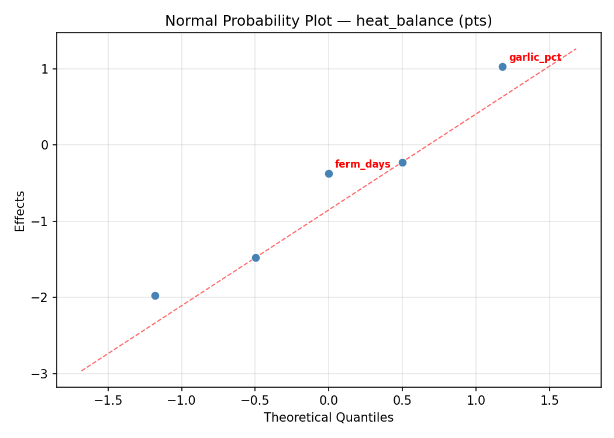
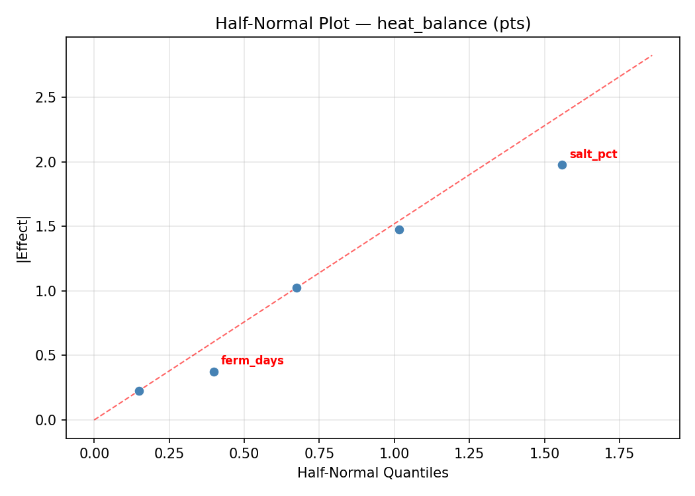
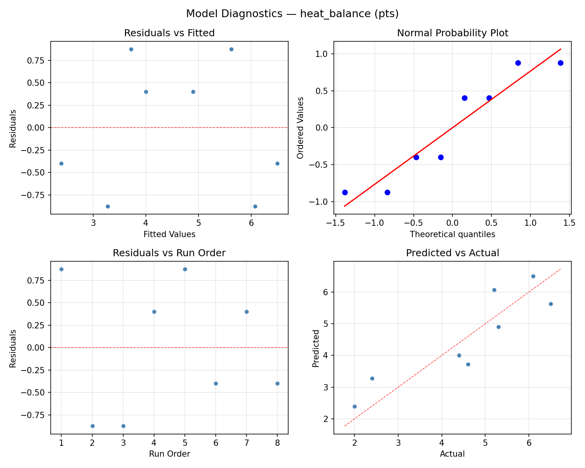
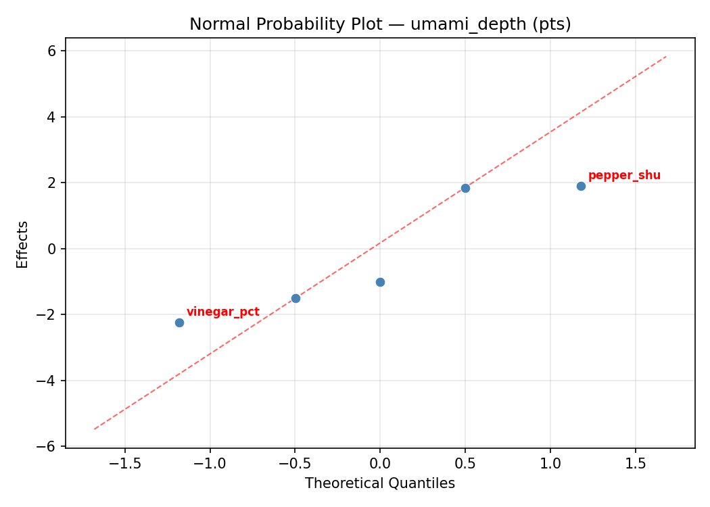
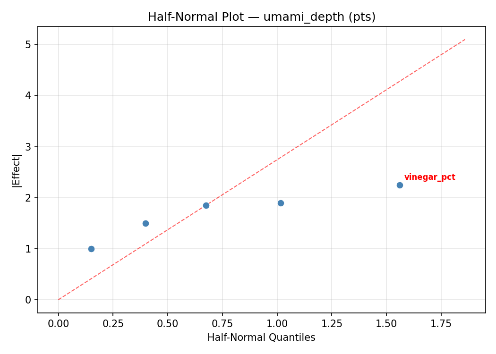
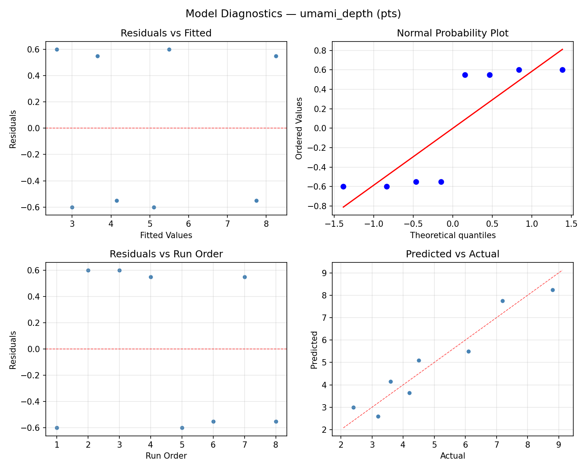

Summary
This experiment investigates fermented hot sauce formulation. Fractional factorial screening of pepper type, salt concentration, garlic ratio, fermentation days, and vinegar addition for heat balance and umami depth.
The design varies 5 factors: pepper shu (SHU), ranging from 5000 to 100000, salt pct (%), ranging from 2 to 6, garlic pct (%), ranging from 2 to 10, ferm days (days), ranging from 7 to 90, and vinegar pct (%), ranging from 5 to 25. The goal is to optimize 2 responses: heat balance (pts) (maximize) and umami depth (pts) (maximize). Fixed conditions held constant across all runs include ferm temp = 22, jar size = 1L.
A fractional factorial design reduces the number of runs from 32 to 8 by deliberately confounding higher-order interactions. This is ideal for screening — identifying which of the 5 factors matter most before investing in a full study.
Key Findings
For heat balance, the most influential factors were vinegar pct (43.2%), ferm days (26.5%), pepper shu (17.4%). The best observed value was 6.5 (at pepper shu = 100000, salt pct = 6, garlic pct = 10).
For umami depth, the most influential factors were garlic pct (44.5%), pepper shu (22.7%), salt pct (16.8%). The best observed value was 8.8 (at pepper shu = 5000, salt pct = 6, garlic pct = 2).
Recommended Next Steps
- Follow up with a response surface design (CCD or Box-Behnken) on the top 3–4 factors to model curvature and find the true optimum.
- Consider whether any fixed factors should be varied in a future study.
- The screening results can guide factor reduction — drop factors contributing less than 5% and re-run with a smaller, more focused design.
Experimental Setup
Factors
| Factor | Low | High | Unit |
|---|
pepper_shu | 5000 | 100000 | SHU |
salt_pct | 2 | 6 | % |
garlic_pct | 2 | 10 | % |
ferm_days | 7 | 90 | days |
vinegar_pct | 5 | 25 | % |
Fixed: ferm_temp = 22, jar_size = 1L
Responses
| Response | Direction | Unit |
|---|
heat_balance | ↑ maximize | pts |
umami_depth | ↑ maximize | pts |
Configuration
{
"metadata": {
"name": "Fermented Hot Sauce Formulation",
"description": "Fractional factorial screening of pepper type, salt concentration, garlic ratio, fermentation days, and vinegar addition for heat balance and umami depth"
},
"factors": [
{
"name": "pepper_shu",
"levels": [
"5000",
"100000"
],
"type": "continuous",
"unit": "SHU"
},
{
"name": "salt_pct",
"levels": [
"2",
"6"
],
"type": "continuous",
"unit": "%"
},
{
"name": "garlic_pct",
"levels": [
"2",
"10"
],
"type": "continuous",
"unit": "%"
},
{
"name": "ferm_days",
"levels": [
"7",
"90"
],
"type": "continuous",
"unit": "days"
},
{
"name": "vinegar_pct",
"levels": [
"5",
"25"
],
"type": "continuous",
"unit": "%"
}
],
"fixed_factors": {
"ferm_temp": "22",
"jar_size": "1L"
},
"responses": [
{
"name": "heat_balance",
"optimize": "maximize",
"unit": "pts"
},
{
"name": "umami_depth",
"optimize": "maximize",
"unit": "pts"
}
],
"settings": {
"operation": "fractional_factorial",
"test_script": "use_cases/96_fermented_hot_sauce/sim.sh"
}
}
Experimental Matrix
The Fractional Factorial Design produces 8 runs. Each row is one experiment with specific factor settings.
| Run | pepper_shu | salt_pct | garlic_pct | ferm_days | vinegar_pct |
|---|
| 1 | 5000 | 6 | 10 | 7 | 5 |
| 2 | 100000 | 2 | 2 | 7 | 5 |
| 3 | 100000 | 6 | 2 | 90 | 5 |
| 4 | 100000 | 6 | 10 | 90 | 25 |
| 5 | 5000 | 6 | 2 | 7 | 25 |
| 6 | 100000 | 2 | 10 | 7 | 25 |
| 7 | 5000 | 2 | 2 | 90 | 25 |
| 8 | 5000 | 2 | 10 | 90 | 5 |
Step-by-Step Workflow
1
Preview the design
$ python doe.py info --config use_cases/96_fermented_hot_sauce/config.json
2
Generate the runner script
$ python doe.py generate --config use_cases/96_fermented_hot_sauce/config.json \
--output use_cases/96_fermented_hot_sauce/results/run.sh --seed 42
3
Execute the experiments
$ bash use_cases/96_fermented_hot_sauce/results/run.sh
4
Analyze results
$ python doe.py analyze --config use_cases/96_fermented_hot_sauce/config.json
5
Get optimization recommendations
$ python doe.py optimize --config use_cases/96_fermented_hot_sauce/config.json
6
Multi-objective optimization
With 2 competing responses, use --multi to find the best compromise via Derringer–Suich desirability.
$ python doe.py optimize --config use_cases/96_fermented_hot_sauce/config.json --multi
7
Generate the HTML report
$ python doe.py report --config use_cases/96_fermented_hot_sauce/config.json \
--output use_cases/96_fermented_hot_sauce/results/report.html
Features Exercised
| Feature | Value |
|---|
| Design type | fractional_factorial |
| Factor types | continuous (all 5) |
| Arg style | double-dash |
| Responses | 2 (heat_balance ↑, umami_depth ↑) |
| Total runs | 8 |
Analysis Results
Generated from actual experiment runs using the DOE Helper Tool.
Response: heat_balance
Top factors: vinegar_pct (43.2%), ferm_days (26.5%), pepper_shu (17.4%).
ANOVA
| Source | DF | SS | MS | F | p-value |
|---|
| Source | DF | SS | MS | F | p-value |
| pepper_shu | 1 | 0.9112 | 0.9112 | 0.667 | 0.4513 |
| salt_pct | 1 | 0.0312 | 0.0312 | 0.023 | 0.8857 |
| garlic_pct | 1 | 0.2812 | 0.2812 | 0.206 | 0.6691 |
| ferm_days | 1 | 2.1013 | 2.1013 | 1.537 | 0.2700 |
| vinegar_pct | 1 | 5.6113 | 5.6113 | 4.105 | 0.0986 |
| pepper_shu*salt_pct | 1 | 2.1013 | 2.1013 | 1.537 | 0.2700 |
| pepper_shu*garlic_pct | 1 | 5.6112 | 5.6112 | 4.105 | 0.0986 |
| pepper_shu*ferm_days | 1 | 0.0312 | 0.0312 | 0.023 | 0.8857 |
| pepper_shu*vinegar_pct | 1 | 0.2812 | 0.2812 | 0.206 | 0.6691 |
| salt_pct*garlic_pct | 1 | 8.2012 | 8.2012 | 6.000 | 0.0580 |
| salt_pct*ferm_days | 1 | 0.9112 | 0.9112 | 0.667 | 0.4513 |
| salt_pct*vinegar_pct | 1 | 1.2012 | 1.2012 | 0.879 | 0.3916 |
| garlic_pct*ferm_days | 1 | 1.2013 | 1.2013 | 0.879 | 0.3916 |
| garlic_pct*vinegar_pct | 1 | 0.9112 | 0.9112 | 0.667 | 0.4513 |
| ferm_days*vinegar_pct | 1 | 8.2012 | 8.2012 | 6.000 | 0.0580 |
| Error | (Lenth | PSE) | 5 | 6.8344 | 1.3669 |
| Total | 7 | 18.3387 | 2.6198 | | |
Pareto Chart

Main Effects Plot

Normal Probability Plot of Effects

Half-Normal Plot of Effects

Model Diagnostics

Response: umami_depth
Top factors: garlic_pct (44.5%), pepper_shu (22.7%), salt_pct (16.8%).
ANOVA
| Source | DF | SS | MS | F | p-value |
|---|
| Source | DF | SS | MS | F | p-value |
| pepper_shu | 1 | 3.6450 | 3.6450 | 1.500 | 0.2752 |
| salt_pct | 1 | 2.0000 | 2.0000 | 0.823 | 0.4059 |
| garlic_pct | 1 | 14.0450 | 14.0450 | 5.780 | 0.0613 |
| ferm_days | 1 | 0.0050 | 0.0050 | 0.002 | 0.9656 |
| vinegar_pct | 1 | 1.6200 | 1.6200 | 0.667 | 0.4513 |
| pepper_shu*salt_pct | 1 | 0.0050 | 0.0050 | 0.002 | 0.9656 |
| pepper_shu*garlic_pct | 1 | 1.6200 | 1.6200 | 0.667 | 0.4513 |
| pepper_shu*ferm_days | 1 | 2.0000 | 2.0000 | 0.823 | 0.4059 |
| pepper_shu*vinegar_pct | 1 | 14.0450 | 14.0450 | 5.780 | 0.0613 |
| salt_pct*garlic_pct | 1 | 11.0450 | 11.0450 | 4.545 | 0.0862 |
| salt_pct*ferm_days | 1 | 3.6450 | 3.6450 | 1.500 | 0.2752 |
| salt_pct*vinegar_pct | 1 | 0.9800 | 0.9800 | 0.403 | 0.5533 |
| garlic_pct*ferm_days | 1 | 0.9800 | 0.9800 | 0.403 | 0.5533 |
| garlic_pct*vinegar_pct | 1 | 3.6450 | 3.6450 | 1.500 | 0.2752 |
| ferm_days*vinegar_pct | 1 | 11.0450 | 11.0450 | 4.545 | 0.0862 |
| Error | (Lenth | PSE) | 5 | 12.1500 | 2.4300 |
| Total | 7 | 33.3400 | 4.7629 | | |
Pareto Chart

Main Effects Plot

Normal Probability Plot of Effects

Half-Normal Plot of Effects

Model Diagnostics

Response Surface Plots
3D surfaces fitted with quadratic RSM. Red dots are observed data points.
heat balance ferm days vs vinegar pct

heat balance garlic pct vs ferm days

heat balance garlic pct vs vinegar pct

heat balance pepper shu vs ferm days

heat balance pepper shu vs garlic pct

heat balance pepper shu vs salt pct

heat balance pepper shu vs vinegar pct

heat balance salt pct vs ferm days

heat balance salt pct vs garlic pct

heat balance salt pct vs vinegar pct

umami depth ferm days vs vinegar pct

umami depth garlic pct vs ferm days

umami depth garlic pct vs vinegar pct

umami depth pepper shu vs ferm days

umami depth pepper shu vs garlic pct

umami depth pepper shu vs salt pct

umami depth pepper shu vs vinegar pct

umami depth salt pct vs ferm days

umami depth salt pct vs garlic pct

umami depth salt pct vs vinegar pct

Multi-Objective Optimization
When responses compete, Derringer–Suich desirability finds the best compromise.
Each response is scaled to a 0–1 desirability, then combined via a weighted geometric mean.
Overall Desirability
D = 0.8245
Per-Response Desirability
| Response | Weight | Desirability | Predicted | Dir |
|---|
heat_balance |
1.5 |
|
5.30 0.7121 5.30 pts |
↑ |
umami_depth |
1.5 |
|
8.80 0.9545 8.80 pts |
↑ |
Recommended Settings
| Factor | Value |
|---|
pepper_shu | 5000 SHU |
salt_pct | 2 % |
garlic_pct | 10 % |
ferm_days | 90 days |
vinegar_pct | 5 % |
Source: from observed run #4
Trade-off Summary
Sacrifice = how much worse than single-objective best.
| Response | Predicted | Best Observed | Sacrifice |
|---|
umami_depth | 8.80 | 8.80 | +0.00 |
Top 3 Runs by Desirability
| Run | D | Factor Settings |
|---|
| #8 | 0.7971 | pepper_shu=100000, salt_pct=6, garlic_pct=10, ferm_days=90, vinegar_pct=25 |
| #3 | 0.6286 | pepper_shu=100000, salt_pct=2, garlic_pct=2, ferm_days=7, vinegar_pct=5 |
Model Quality
| Response | R² | Type |
|---|
umami_depth | 0.5187 | linear |
Full Multi-Objective Output
============================================================
MULTI-OBJECTIVE OPTIMIZATION
Method: Derringer-Suich Desirability Function
============================================================
Overall desirability: D = 0.8245
Response Weight Desirability Predicted Direction
---------------------------------------------------------------------
heat_balance 1.5 0.7121 5.30 pts ↑
umami_depth 1.5 0.9545 8.80 pts ↑
Recommended settings:
pepper_shu = 5000 SHU
salt_pct = 2 %
garlic_pct = 10 %
ferm_days = 90 days
vinegar_pct = 5 %
(from observed run #4)
Trade-off summary:
heat_balance: 5.30 (best observed: 6.50, sacrifice: +1.20)
umami_depth: 8.80 (best observed: 8.80, sacrifice: +0.00)
Model quality:
heat_balance: R² = 0.5593 (linear)
umami_depth: R² = 0.5187 (linear)
Top 3 observed runs by overall desirability:
1. Run #4 (D=0.8245): pepper_shu=5000, salt_pct=2, garlic_pct=10, ferm_days=90, vinegar_pct=5
2. Run #8 (D=0.7971): pepper_shu=100000, salt_pct=6, garlic_pct=10, ferm_days=90, vinegar_pct=25
3. Run #3 (D=0.6286): pepper_shu=100000, salt_pct=2, garlic_pct=2, ferm_days=7, vinegar_pct=5
Full Analysis Output
=== Main Effects: heat_balance ===
Factor Effect Std Error % Contribution
--------------------------------------------------------------
vinegar_pct -1.6750 0.5723 43.2%
ferm_days 1.0250 0.5723 26.5%
pepper_shu 0.6750 0.5723 17.4%
garlic_pct -0.3750 0.5723 9.7%
salt_pct 0.1250 0.5723 3.2%
=== ANOVA Table: heat_balance ===
Source DF SS MS F p-value
-----------------------------------------------------------------------------
pepper_shu 1 0.9112 0.9112 0.667 0.4513
salt_pct 1 0.0312 0.0312 0.023 0.8857
garlic_pct 1 0.2812 0.2812 0.206 0.6691
ferm_days 1 2.1013 2.1013 1.537 0.2700
vinegar_pct 1 5.6113 5.6113 4.105 0.0986
pepper_shu*salt_pct 1 2.1013 2.1013 1.537 0.2700
pepper_shu*garlic_pct 1 5.6112 5.6112 4.105 0.0986
pepper_shu*ferm_days 1 0.0312 0.0312 0.023 0.8857
pepper_shu*vinegar_pct 1 0.2812 0.2812 0.206 0.6691
salt_pct*garlic_pct 1 8.2012 8.2012 6.000 0.0580
salt_pct*ferm_days 1 0.9112 0.9112 0.667 0.4513
salt_pct*vinegar_pct 1 1.2012 1.2012 0.879 0.3916
garlic_pct*ferm_days 1 1.2013 1.2013 0.879 0.3916
garlic_pct*vinegar_pct 1 0.9112 0.9112 0.667 0.4513
ferm_days*vinegar_pct 1 8.2012 8.2012 6.000 0.0580
Error (Lenth PSE) 5 6.8344 1.3669
Total 7 18.3387 2.6198
Note: Error estimated using Lenth's pseudo-standard-error (unreplicated design)
=== Interaction Effects: heat_balance ===
Factor A Factor B Interaction % Contribution
------------------------------------------------------------------------
salt_pct garlic_pct 2.0250 20.0%
ferm_days vinegar_pct 2.0250 20.0%
pepper_shu garlic_pct 1.6750 16.5%
pepper_shu salt_pct -1.0250 10.1%
salt_pct vinegar_pct -0.7750 7.6%
garlic_pct ferm_days -0.7750 7.6%
salt_pct ferm_days -0.6750 6.7%
garlic_pct vinegar_pct -0.6750 6.7%
pepper_shu vinegar_pct 0.3750 3.7%
pepper_shu ferm_days -0.1250 1.2%
=== Summary Statistics: heat_balance ===
pepper_shu:
Level N Mean Std Min Max
------------------------------------------------------------
100000 4 4.2250 1.5370 2.0000 5.3000
5000 4 4.9000 1.8565 2.4000 6.5000
salt_pct:
Level N Mean Std Min Max
------------------------------------------------------------
2 4 4.5000 1.7758 2.0000 6.1000
6 4 4.6250 1.7173 2.4000 6.5000
garlic_pct:
Level N Mean Std Min Max
------------------------------------------------------------
10 4 4.7500 1.6176 2.4000 6.1000
2 4 4.3750 1.8446 2.0000 6.5000
ferm_days:
Level N Mean Std Min Max
------------------------------------------------------------
7 4 4.0500 2.1977 2.0000 6.5000
90 4 5.0750 0.7632 4.4000 6.1000
vinegar_pct:
Level N Mean Std Min Max
------------------------------------------------------------
25 4 5.4000 0.7958 4.6000 6.5000
5 4 3.7250 1.8998 2.0000 6.1000
=== Main Effects: umami_depth ===
Factor Effect Std Error % Contribution
--------------------------------------------------------------
garlic_pct -2.6500 0.7716 44.5%
pepper_shu -1.3500 0.7716 22.7%
salt_pct -1.0000 0.7716 16.8%
vinegar_pct -0.9000 0.7716 15.1%
ferm_days -0.0500 0.7716 0.8%
=== ANOVA Table: umami_depth ===
Source DF SS MS F p-value
-----------------------------------------------------------------------------
pepper_shu 1 3.6450 3.6450 1.500 0.2752
salt_pct 1 2.0000 2.0000 0.823 0.4059
garlic_pct 1 14.0450 14.0450 5.780 0.0613
ferm_days 1 0.0050 0.0050 0.002 0.9656
vinegar_pct 1 1.6200 1.6200 0.667 0.4513
pepper_shu*salt_pct 1 0.0050 0.0050 0.002 0.9656
pepper_shu*garlic_pct 1 1.6200 1.6200 0.667 0.4513
pepper_shu*ferm_days 1 2.0000 2.0000 0.823 0.4059
pepper_shu*vinegar_pct 1 14.0450 14.0450 5.780 0.0613
salt_pct*garlic_pct 1 11.0450 11.0450 4.545 0.0862
salt_pct*ferm_days 1 3.6450 3.6450 1.500 0.2752
salt_pct*vinegar_pct 1 0.9800 0.9800 0.403 0.5533
garlic_pct*ferm_days 1 0.9800 0.9800 0.403 0.5533
garlic_pct*vinegar_pct 1 3.6450 3.6450 1.500 0.2752
ferm_days*vinegar_pct 1 11.0450 11.0450 4.545 0.0862
Error (Lenth PSE) 5 12.1500 2.4300
Total 7 33.3400 4.7629
Note: Error estimated using Lenth's pseudo-standard-error (unreplicated design)
=== Interaction Effects: umami_depth ===
Factor A Factor B Interaction % Contribution
------------------------------------------------------------------------
pepper_shu vinegar_pct 2.6500 19.8%
salt_pct garlic_pct 2.3500 17.5%
ferm_days vinegar_pct 2.3500 17.5%
salt_pct ferm_days 1.3500 10.1%
garlic_pct vinegar_pct 1.3500 10.1%
pepper_shu ferm_days 1.0000 7.5%
pepper_shu garlic_pct 0.9000 6.7%
salt_pct vinegar_pct -0.7000 5.2%
garlic_pct ferm_days -0.7000 5.2%
pepper_shu salt_pct 0.0500 0.4%
=== Summary Statistics: umami_depth ===
pepper_shu:
Level N Mean Std Min Max
------------------------------------------------------------
100000 4 5.6750 2.3400 3.6000 8.8000
5000 4 4.3250 2.1030 2.4000 7.2000
salt_pct:
Level N Mean Std Min Max
------------------------------------------------------------
2 4 5.5000 3.0000 2.4000 8.8000
6 4 4.5000 1.2028 3.2000 6.1000
garlic_pct:
Level N Mean Std Min Max
------------------------------------------------------------
10 4 6.3250 2.3599 3.2000 8.8000
2 4 3.6750 0.9287 2.4000 4.5000
ferm_days:
Level N Mean Std Min Max
------------------------------------------------------------
7 4 5.0250 2.5747 3.2000 8.8000
90 4 4.9750 2.1172 2.4000 7.2000
vinegar_pct:
Level N Mean Std Min Max
------------------------------------------------------------
25 4 5.4500 2.6988 2.4000 8.8000
5 4 4.5500 1.8138 3.2000 7.2000
Optimization Recommendations
=== Optimization: heat_balance ===
Direction: maximize
Best observed run: #1
pepper_shu = 100000
salt_pct = 6
garlic_pct = 10
ferm_days = 90
vinegar_pct = 25
Value: 6.5
RSM Model (linear, R² = 0.9143, Adj R² = 0.6999):
Coefficients:
intercept +4.5625
pepper_shu -0.7375
salt_pct +1.0125
garlic_pct +0.3875
ferm_days +0.6125
vinegar_pct +0.0375
Predicted optimum (from linear model, at observed points):
pepper_shu = 5000
salt_pct = 6
garlic_pct = 10
ferm_days = 7
vinegar_pct = 5
Predicted value: 6.0500
Surface optimum (via L-BFGS-B, linear model):
pepper_shu = 5000
salt_pct = 6
garlic_pct = 10
ferm_days = 90
vinegar_pct = 25
Predicted value: 7.3500
Model quality: Excellent fit — surface predictions are reliable.
Factor importance:
1. salt_pct (effect: 2.0, contribution: 36.3%)
2. pepper_shu (effect: 1.5, contribution: 26.5%)
3. ferm_days (effect: 1.2, contribution: 22.0%)
4. garlic_pct (effect: -0.8, contribution: 13.9%)
5. vinegar_pct (effect: -0.1, contribution: 1.3%)
=== Optimization: umami_depth ===
Direction: maximize
Best observed run: #4
pepper_shu = 5000
salt_pct = 6
garlic_pct = 2
ferm_days = 7
vinegar_pct = 25
Value: 8.8
RSM Model (linear, R² = 0.7893, Adj R² = 0.2625):
Coefficients:
intercept +5.0000
pepper_shu -1.1250
salt_pct +1.1750
garlic_pct +0.3500
ferm_days -0.7000
vinegar_pct -0.1750
Predicted optimum (from linear model, at observed points):
pepper_shu = 5000
salt_pct = 6
garlic_pct = 10
ferm_days = 7
vinegar_pct = 5
Predicted value: 8.5250
Surface optimum (via L-BFGS-B, linear model):
pepper_shu = 5000
salt_pct = 6
garlic_pct = 10
ferm_days = 7
vinegar_pct = 5
Predicted value: 8.5250
Model quality: Good fit — general trends are captured, some noise remains.
Factor importance:
1. salt_pct (effect: 2.4, contribution: 33.3%)
2. pepper_shu (effect: 2.2, contribution: 31.9%)
3. ferm_days (effect: -1.4, contribution: 19.9%)
4. garlic_pct (effect: -0.7, contribution: 9.9%)
5. vinegar_pct (effect: 0.3, contribution: 5.0%)